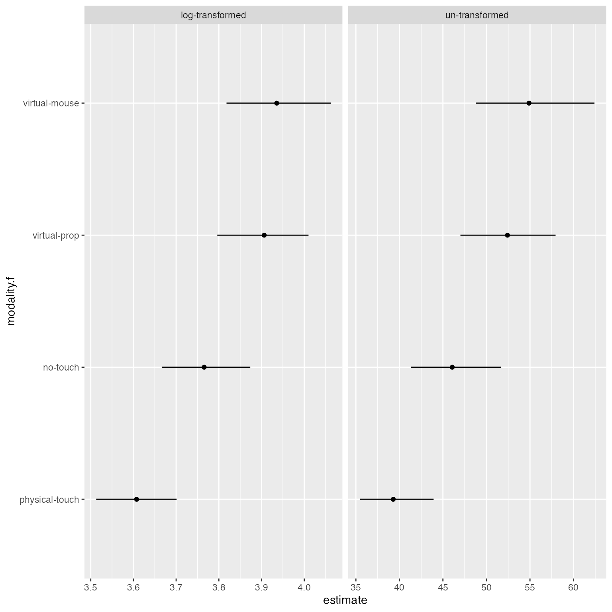
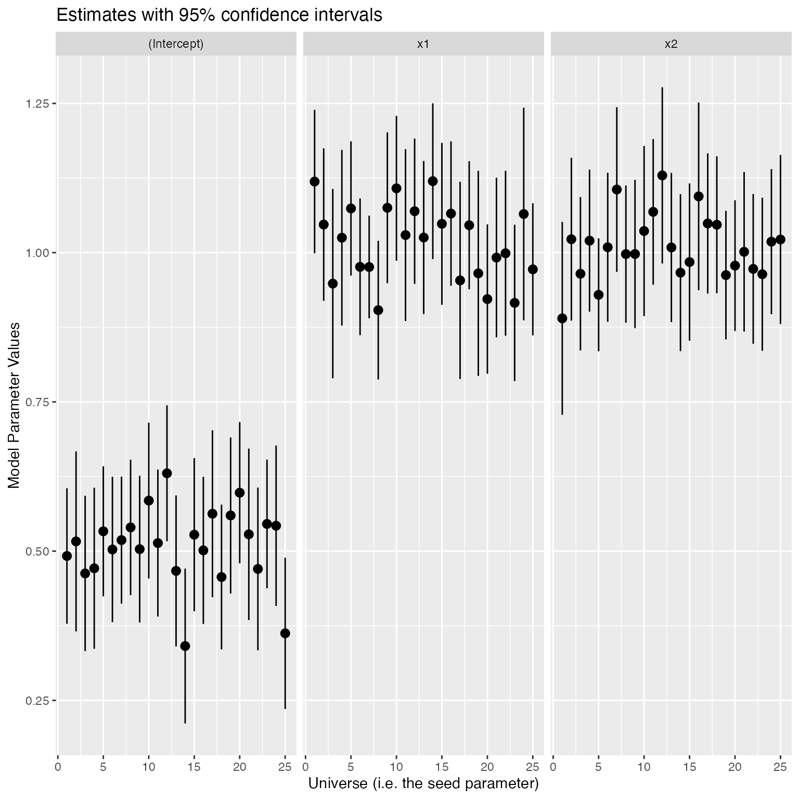

vignettes/branch.Rmd
branch.RmdIn a multiverse analysis, researchers identify sets of defensible analysis choices (e.g., different ways of excluding outliers, different data transformations), implement them all, and then report the outcomes of all analyses resulting from all possible choice combinations. Thus, a multiverse analysis consists of different paths or branches of analysis for the same problem.
For an example of how a branch might arise during analysis, let’s say that you have a variable, \(x\), which can assume any value between 1 and 60. You want to discretise this variable into two ordinal categories — high (if x >= 30) and low (if x < 30). However, another researcher might argue for discretising this variable into three ordinal categories — high (if x >= 40), medium (if 20 <= x < 40), and low (if x < 20).
An important aspect of this package is to make declaring such branches in the analysis more natural and convenient. Each branch is identified by a parameter, which can take two or more options. Thus, the different options are different branches within the multiverse. Below, we show how a user can specify these two alternative analysis paths using the multiverse library.
To do this, we first create a multiverse object, M:
M = multiverse()Let us then define the variable x:
x = rnorm(100, 30, 10)Then we can use the branch() function to specify the two alternatives as follows:
```{multiverse default-m-0, inside = M}
y = branch(discretisation,
"two_levels" ~ ifelse(x < 30, "low", "high"),
"three_levels" ~ ifelse(x < 20, "low", ifelse(x > 40, "high", "medium"))
)
```Now, we can inspect the multiverse object to see if all the options were created.
expand(M)## # A tibble: 2 × 5
## .universe discretisation .parameter_assignment .code .results
## <int> <chr> <list> <list> <list>
## 1 1 two_levels <named list [1]> <named list [1]> <env>
## 2 2 three_levels <named list [1]> <named list [1]> <env>Above, we see that the multiverse object contains two alternative analysis paths, one for each different option of discretisation.
branch()
The branch() function accepts three or more arguments—the first argument defines a parameter (here discretisation) which is used as an unique identifier for each decision point. The subsequent arguments, which we refer to as options, define the different choices that a researcher can make at that decision point of their analysis; these follow the syntax <option_name> ~ <option_definition>. The <option_name> part is intended to support meaningful naming of the branches to help the user keep track of choices. (in the multiverse specification below, “two_levels”, and “three_levels” are used as option names). However, names can be omitted; if omitted, the entire syntax for performing that operation will be treated as the name for that particular option.
Note In this vignette, we make use of multiverse code chunks, a custom engine designed to work with the multiverse package, to implement the multiverse analyses. Please refer to the vignette (vignette("multiverse-in-rmd")) for more details. Users could instead make use of the function which is more suited for a script-style implementation. Please refer to the README or refer to vignette("complete-multiverse-analysis") for more details.
In this section, we will go into a little detail on how the branch() function is used by multiverse to create two or more distinct end-to-end analysis paths from the user-specified syntax. You can skip to the next section if the specific implementation details of the multiverse library do not interest you. Multiverse captures the user’s declared code as an unevaluated expression, which is an internal representation of an abstract syntax tree used by R for meta-programming purposes. This is why we need a dedicated multiverse code chunk or the inside() function, as such boilerplate allows us to prevent the code from being executed by R directly. The multiverse compiler transforms these unevaluated expressions into multiple unique R expressions, one for every possible analysis path in the multiverse. This is done in two steps.
First, multiverse enumerates all possible valid parameter assignments. A parameter assignment consists of a single assignment of an option to each parameter. Valid parameter assignments are those that satisfy all procedural dependencies (e.g., %when% clauses). Each parameter assignment corresponds to a single possible analysis path through the multiverse, in other words a single universe.
Second, multiverse takes each universe and uses its parameter assignment to recursively rewrite the unevaluated multiverse code expression into code specifically for that universe. It does this by replacing each branch() subexpression with the subexpression corresponding to the parameter assignment for that branch.
We use a tree structure to store the output of the multiverse compiler, with each level in the tree corresponding to a single unit of the multiverse. If the analyst is using multiverse code chunks, each unit is a single code chunk; if the user is using inside(), each unit is one call to inside(). When the user declares their first unit with one or more parameters, we enumerate all combinations of the options which form the children of a singular root node, and then prune paths which are incompatible with declared procedural dependencies. At each subsequent level, we again enumerate all newly declared combinations of the options, which are then added to each existing node from the previous level as children, followed by pruning any inconsistent analysis paths. Thus, if we declare a multiverse with \(m parameters\), 1 parameter per unit on average, and \(n options\) per parameter on average, we have a multiverse with \(mn\) distinct analyses and a tree with approximately \(\frac{m^(n+1) - m}{m-1}\) nodes.
Each node in the tree contains: (1) a parameter assignment—a dictionary mapping each parameter onto its assigned option for analysis paths passing through that node; (2) the unevaluated R expression for the current unit that is created using the parameter assignment for that node; (3) a unique R environment, which is a child environment of the parent node’s environment.
In R, environments are mutable dictionaries that encapsulate variable state and power scoping in the language (see https://adv-r.hadley.nz/environments.html); all code in R is executed inside an environment that determines the variables defined for that code and the values assigned to those variables. Moreover, every environment has a parent environment, and variable bindings in the parent environment are accessible via its child environments. We execute each node in its own environment. Because we share parent environments for nodes at the same level of the tree, two nodes which are children of the same parent node will automatically have results of the parent node’s computation available in their execution environment, avoiding redundant computation. Consequently, we reduce the execution time from the naive approach of executing all analysis paths separately (\(O(nm^n)\)) to executing just the code at each node in the tree: \(O(\frac{m^(n+1) - m}{m - 1})\)
A branch may be defined for:
Data substitution parameters which offer to switch between different raw datasets, either collected or simulated.
Data processing parameters which offer to process the same raw data in different ways before it is analyzed.
Modeling parameters offer different ways of analyzing the same processed data
Presentation parameters offer different ways of presenting analysis outcomes
In the rest of this document we describe different ways of declaring a branch, using different syntactical styles that are popular with R users, including base R syntax and tidyverse syntax.
%>%
Let’s say that we have some data which indicates the amount of time spent by a user in four different conditions which are indexed 1, 2, 3 and 4 (the modality column in the following dataset). We will first load the data and convert the column into factor from integer.
data("userlogs")
data.userlogs.raw = userlogs %>%
mutate( modality = factor(modality) ) %>%
arrange( modality )We then create the multiverse object for this analysis
M = multiverse()The data variable duration is approximately normally distributed, however, as is common with such data it has a long right-tail. Before using a regression model, we can choose to either log-transform the data, or assume that it is normally distribution and analyse it. We can perform both analysis in our multiverse by declaring two branches — one where the variable is log-transformed and the other where it is not.
```{multiverse default-m-1, inside = M}
df <- data.userlogs.raw %>%
select(modality, duration) %>%
mutate( duration = branch( data_transform,
"none" ~ duration,
"log" ~ log(duration)
))
```The expand shows that there are two rows for the data transform branch which correspond to the two different reasonable alternatives for transforming time spent data.
expand(M)## # A tibble: 2 × 5
## .universe data_transform .parameter_assignment .code .results
## <int> <chr> <list> <list> <list>
## 1 1 none <named list [1]> <named list [1]> <env>
## 2 2 log <named list [1]> <named list [1]> <env>If we look at the code column, which is a list of expressions, we see that the variable duration is defined in two separate ways, one for each row of the multiverse table. In other words, for each alternate analysis path, one of these would get executed and that would be the how the duration variable is transformed for that analysis path.
expand(M)$.code## [[1]]
## [[1]]$`h-1`
## {
## df <- data.userlogs.raw %>% select(modality, duration) %>%
## mutate(duration = duration)
## }
##
##
## [[2]]
## [[2]]$`h-1`
## {
## df <- data.userlogs.raw %>% select(modality, duration) %>%
## mutate(duration = log(duration))
## }
M = multiverse()Recall the hurricane example from the README. In that example, the researchers are faced with the decision of which hurricanes to exclude as outliers. They decide to exclude the two hurricanes which have caused the most deaths. However, there may be other possible ways of removing outliers based on extreme number of deaths:
this decision node in a multiverse analysis can thus be declared as:
```{multiverse default-m-2, inside = M}
# here we just create the variable `df` in the multiverse
df = data("hurricane")
hurricane_data = hurricane %>%
# rename some variables
rename(
year = Year,
name = Name,
dam = NDAM,
death = alldeaths,
female = Gender_MF,
masfem = MasFem,
category = Category,
pressure = Minpressure_Updated_2014,
wind = HighestWindSpeed
)
# here, we perform a `filter` operation in the multiverse
df.filtered = hurricane %>%
filter(branch(death_outliers,
"no_exclusion" ~ TRUE,
"most_extreme" ~ name != "Katrina",
"two_most_extreme" ~ !(name %in% c("Katrina", "Audrey"))
))
```We can inspect the multiverse object to see our declared analysis paths:
expand(M)## # A tibble: 3 × 5
## .universe death_outliers .parameter_assignment .code .results
## <int> <chr> <list> <list> <list>
## 1 1 no_exclusion <named list [1]> <named list [1]> <env>
## 2 2 most_extreme <named list [1]> <named list [1]> <env>
## 3 3 two_most_extreme <named list [1]> <named list [1]> <env>
M = multiverse()Say we are not familiar with R’s tidyverse packages and it’s style of writing code. An alternate way of declaring a branch for transforming the duration variable in the analysis would be to use two separate functions for the transformation depending on which universe one is.
```{multiverse default-m-3, inside = M}
duration <- branch(data_trans,
"log-transformed" ~ log,
"un-transformed" ~ identity
)(data.userlogs.raw$duration)
```Then we execute the multiverse and inspect the results:
execute_multiverse(M)
expand(M) %>%
mutate(transformed_duration = map(.results, "duration"))## # A tibble: 2 × 6
## .universe data_trans .parameter_assig… .code .results transformed_dur…
## <int> <chr> <list> <list> <list> <list>
## 1 1 log-transformed <named list [1]> <named … <env> <dbl [512]>
## 2 2 un-transformed <named list [1]> <named … <env> <dbl [512]>As you can see, this creates, in each universe within the multiverse, a vector named duration which is either un-transformed or log-transformed. However, this suffers from being slightly unintuitive as it is harder to read or write the code. What is actually happening here is that the entire branch(...) gets replaced with either log() or identity() within a given universe.
A more readable pattern might be:
M = multiverse()```{multiverse default-m-4, inside = M}
duration_transform = branch(data_trans,
"log-transformed" ~ log,
"un-transformed" ~ identity
)
duration = duration_transform(data.userlogs.raw$duration)
```Next, we execute and inspect the results. Again, this alternate calculation also leads to the same result.
execute_multiverse(M)
expand(M) %>%
mutate( transformed_duration = map(.results, "duration" ) ) %>%
unnest(c(transformed_duration)) %>%
head()## # A tibble: 6 × 6
## .universe data_trans .parameter_assig… .code .results transformed_dur…
## <int> <chr> <list> <list> <list> <dbl>
## 1 1 log-transformed <named list [1]> <named … <env> 4.25
## 2 1 log-transformed <named list [1]> <named … <env> 4.80
## 3 1 log-transformed <named list [1]> <named … <env> 3.89
## 4 1 log-transformed <named list [1]> <named … <env> 3.75
## 5 1 log-transformed <named list [1]> <named … <env> 4.01
## 6 1 log-transformed <named list [1]> <named … <env> 3.41If you want to use a parameter multiple times, or just want to define it upfront, you can assign it to a variable and use the variable in your code. For example, in the next example, we declare three different branches for data transformation, data modeling and data presentation respectively. We also define any necessary functions along the way.
library(boot)
library(broom)
samplemean <- function(x, d) {return(mean(x[d]))}
M = multiverse()
t_test_ci <- function(x, y) {
broom::tidy(t.test(x, conf.level = y))
}
bootstrapped_ci <- function(x, y) {
boot(data = x, statistic = samplemean, R = 5000) %>%
broom::tidy( conf.int = TRUE, conf.method = "bca", conf.level = y) %>%
rename(estimate = statistic)
}```{multiverse default-m-5, inside = M}
data_trans <- branch(data_trans,
"log-transformed" ~ log,
"un-transformed" ~ identity
)
fit <- branch(bootstrap,
"t-dist" ~ t_test_ci,
"bca" ~ bootstrapped_ci
)
ci <- branch( ci, 0.5, 0.68, 0.95, 0.99 )
df <- data.userlogs.raw %>%
mutate( duration = data_trans(duration) ) %>%
mutate( modality.f = factor(modality) ) %>%
group_by(subject, modality.f, modalityname) %>%
summarise( duration = mean(duration), .groups = "drop" ) %>%
group_by(modality.f) %>%
rename( value = duration ) %>%
summarise( data = list(value), .groups = "keep" )
df <- df %>%
mutate( fit = map(data, ~ fit(.x, ci) ) ) %>%
select(-data) %>%
unnest( cols = c(fit) )
```We then write the analysis and use those variables to indicate branches in our analysis within the multiverse.
To see the results of using branches, we plot a part of this multiverse. We see the different transformations (no transformations in the right column and log-transform in the left column). Each row shows the different data presentation branches by presenting different confidence levels.
expand(M) %>%
mutate(df = map(.results, "df" ) ) %>%
unnest( cols = c(df) ) %>%
mutate( modality.f = recode( modality.f,
"1" = "physical-touch",
"2" = "no-touch",
"3" = "virtual-prop",
"4" = "virtual-mouse"
) ) %>%
mutate(
estimate = ifelse(data_trans == "log", exp(estimate), estimate),
conf.low = ifelse(data_trans == "log", exp(conf.low), conf.low),
conf.high = ifelse(data_trans == "log", exp(conf.high), conf.high)
) %>%
arrange(ci, desc(data_trans), desc(bootstrap)) %>%
filter( bootstrap == "bca" ) %>%
ggplot() +
#geom_vline( xintercept = 0, colour = '#979797' ) +
geom_point( aes(x = estimate, y = modality.f)) +
geom_errorbarh( aes(xmin = conf.low, xmax = conf.high, y = modality.f), height = 0) +
facet_grid(ci ~ data_trans, scales = "free")
branch
So far we have only looked at examples where we declare parameters within a branch which takes discrete values. In most cases, it makes sense to declare them separately and if the number of values for a discrete variable is not too high, sufficiently easy and concise to declare them in this manner. However, this does not apply to continuous variables as declaring all possible values would be painstakingly difficult. Hence we provide a alternate way of declaring branches where the parameter takes a continuous sequence of values.
M = multiverse()```{multiverse default-m-6, inside = M}
set.seed(branch(seed, .options = 1:25))
x1 <- rnorm(25)
x2 <- rnorm(25)
y <- x1 + x2 + runif(25)
m <- lm(y ~ x1+ x2)
intervals <- broom::tidy(m, conf.int = TRUE)
```We then plot the estimates from the multiverse to see if we obtain the correct results:
expand(M) %>%
mutate(df = map(.results, "intervals" ) ) %>%
unnest( cols = c(df) ) %>%
unnest(seed) %>% # won't be necessary once issue #34 is fixed
ggplot(aes(x = .universe, y = estimate, ymin = conf.low, ymax = conf.high), alpha = 0.5) +
geom_pointrange() +
facet_grid( . ~ term ) +
scale_x_continuous( breaks = seq(0, 25, by = 5) ) +
labs(x = "Universe (i.e. the seed parameter)", y = "Model Parameter Values", title = "Estimates with 95% confidence intervals")
Note: in this vignette we used the script-oriented inside() function for implementing the multiverse. However, we can implement the exact same multiverse in RMarkdown using the multiverse-code-block for more interactive programming. To implement this using a multiverse-code-block, we can simply place the code passed into the inside function (the second argument) inside a code block of type multiverse, provide it with the appropriate labels and multiverse object, and execute it. See (multiverse-in-rmd) and (branch) for more details and examples.